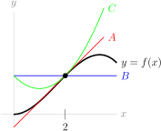

1
Below is a graph of \(y=f(x)\text{,}\) along with the constant approximation, linear approximation, and quadratic approximation centred at \(a=2\text{.}\) Which is which?

Below is a graph of \(y=f(x)\text{,}\) along with the constant approximation, linear approximation, and quadratic approximation centred at \(a=2\text{.}\) Which is which?
Suppose \(T(x)\) is the Taylor series for \(f(x)=\arctan^3\left(e^x+7\right)\) centred at \(a=5\text{.}\) What is \(T(5)\text{?}\)
Below are a list of common functions, and their Taylor series representations. Match the function to the Taylor series.
| function | series |
| A. \(\dfrac{1}{1-x}\) | I. \(\displaystyle\sum_{n=0}^\infty(-1)^n\dfrac{x^{n+1}}{n+1}\) |
| B. \(\log(1+x)\) | II. \(\displaystyle\sum_{n=0}^\infty(-1)^n\dfrac{x^{2n+1}}{(2n+1)!}\) |
| C. \(\arctan x\) | III. \(\displaystyle\sum_{n=0}^\infty(-1)^n\dfrac{x^{2n}}{(2n)!}\) |
| D. \(e^x\) | IV. \(\displaystyle\sum_{n=0}^\infty(-1)^n\dfrac{x^{2n+1}}{2n+1}\) |
| E. \(\sin x\) | V. \(\displaystyle\sum_{n=0}^\infty x^n\) |
| F. \(\cos x\) | VI. \(\displaystyle\sum_{n=0}^\infty \frac{x^n}{n!}\) |
In Questions 5 through 8, you will create Taylor series from scratch. In practice, it is often preferable to modify an existing series, rather than creating a new one, but you should understand both ways.
Using the definition of a Taylor series, find the Taylor series for \(f(x)=\log(x)\) centred at \(x=1\text{.}\)
Find the Taylor series for \(f(x)=\sin x\) centred at \(a=\pi\text{.}\)
Using the definition of a Taylor series, find the Taylor series for \(g(x)=\dfrac{1}{x}\) centred at \(x=10\text{.}\) What is the interval of convergence of the resulting series?
Using the definition of a Taylor series, find the Taylor series for \(h(x)=e^{3x}\) centred at \(x=a\text{,}\) where \(a\) is some constant. What is the radius of convergence of the resulting series?
In Questions 9 through 16, practice creating new Taylor series by modifying known Taylor series, rather than creating your series from scratch.
Find the Maclaurin series for \(f(x) = \dfrac{1}{2x-1}\text{.}\)
Let \(\displaystyle\sum\limits_{n=0}^\infty b_nx^n\) be the Maclaurin series for \(\displaystyle f(x) = \frac{3}{x+1} - \frac{1}{2x-1}\text{,}\)
i.e. \(\displaystyle\sum\limits_{n=0}^\infty b_nx^n = \frac{3}{x+1} - \frac{1}{2x-1}\text{.}\)
Find \(b_n\text{.}\)
Find the coefficient \(c_5\) of the fifth degree term in the Maclaurin series \(\displaystyle\sum_{n=0}^\infty c_nx^n\) for \(e^{3x}\text{.}\)
Express the Taylor series of the function
about \(x = 0\) in summation notation.
The first two terms in the Maclaurin series for \(x^2 \sin(x^3)\) are \(ax^5 + bx^{11}\) , where \(a\) and \(b\) are constants. Find the values of \(a\) and \(b\text{.}\)
Give the first two nonzero terms in the Maclaurin series for \(\displaystyle{\int \frac{e^{-x^2}-1}{x} \,\dee{x}}\text{.}\)
Find the Maclaurin series for \(\displaystyle{\int x^4\arctan(2x) \,\dee{x}}\text{.}\)
Suppose that \(\displaystyle\diff{f}{x}=\frac{x}{1+3x^3}\) and \(f(0)=1\text{.}\) Find the Maclaurin series for \(f(x)\text{.}\)
In past chapters, we were only able to exactly evaluate very specific types of series: geometric and telescoping. In Questions 17 through 25, we expand our range by relating given series to Taylor series.
The Maclaurin series for \(\arctan x\) is given by
which has radius of convergence equal to \(1\text{.}\) Use this fact to compute the exact value of the series below:
Evaluate \({\displaystyle\sum_{n=0}^\infty\frac{(-1)^n}{n!}}\,\text{.}\)
Evaluate \({\displaystyle\sum_{k=0}^\infty\frac{1}{e^k k!}}\,\text{.}\)
Evaluate the sum of the convergent series \({\displaystyle\sum_{k=1}^\infty\frac{1}{\pi^k k!}}\,\text{.}\)
Evaluate \({\displaystyle\sum_{n=1}^\infty\frac{(-1)^{n-1}}{n\, 2^n}}\,\text{.}\)
Evaluate \({\displaystyle\sum_{n=1}^\infty\frac{n+2}{n!}e^n}\,\text{.}\)
Evaluate \(\displaystyle\sum_{n=1}^\infty \frac{2^n}{n}\text{,}\) or show that it diverges.
Evaluate
or show that it diverges.
(a) Show that the power series \(\displaystyle\sum_{n=0}^\infty \frac{x^{2n}}{(2n)!}\) converges absolutely for all real numbers \(x\text{.}\)
(b) Evaluate \(\displaystyle\sum_{n=0}^\infty \frac{1}{(2n)!}\text{.}\)
Example 3.6.15 mentions the formula
Using the Taylor series for arctangent, how many terms would you have to add up to approximate \(\pi\) with an error of at most \(4\times 10^{-5}\text{?}\)
Suppose you wanted to approximate the number \(\log(1.5)\) as a rational number using the Taylor expansion of \(\log(1+x)\text{.}\) How many terms would you need to add to get 10 decimal places of accuracy? (That is, an absolute error less than \(5\times10^{-11}\text{.}\))
Suppose you wanted to approximate the number \(e\) as a rational number using the Maclaurin expansion of \(e^x\text{.}\) How many terms would you need to add to get 10 decimal places of accuracy? (That is, an absolute error less than \(5\times10^{-11}\text{.}\))
You may assume without proof that \(2 \lt e \lt 3\text{.}\)
Suppose you wanted to approximate the number \(\log(0.9)\) as a rational number using the Taylor expansion of \(\log(1-x)\text{.}\) Which partial sum should you use to get 10 decimal places of accuracy? (That is, an absolute error less than \(5\times10^{-11}\text{.}\))
Define the hyperbolic sine function as
Suppose you wanted to approximate the number \(\sinh(b)\) using the Maclaurin series of \(\sinh x\text{,}\) where \(b\) is some number in \((-2,1)\text{.}\) Which partial sum should you use to guarantee 10 decimal places of accuracy? (That is, an absolute error less than \(5\times10^{-11}\text{.}\))
You may assume without proof that \(2 \lt e \lt 3\text{.}\)
Let \(f(x)\) be a function with
for all \(n \ge 1\text{.}\)
Give reasonable bounds (both upper and lower) on the error involved in approximating \(f\left(-\frac13 \right)\) using the partial sum \(S_6\) of the Taylor series for \(f(x)\) centred at \(a=\frac12\text{.}\)
Remark: One function with this quality is the inverse hyperbolic tangent function 30 Of course it is! Actually, hyperbolic tangent is \(\mathrm{tanh}(x) = \dfrac{e^x-e^{-x}}{e^x+e^{-x}}\text{,}\) and inverse hyperbolic tangent is its functional inverse..
Use series to evaluate \(\displaystyle \lim\limits_{x\rightarrow 0}\frac{1-\cos x}{1+x-e^x}\text{.}\)
Evaluate \(\displaystyle \lim\limits_{x\rightarrow 0}\frac{\sin x -x +\frac{x^3}{6}}{x^5}\text{.}\)
Evaluate \(\displaystyle \lim\limits_{x\rightarrow 0}\left(1+x+x^2\right)^{2/x}\) using a Taylor series for the natural logarithm.
Use series to evaluate
Evaluate the series \(\displaystyle\sum_{n=0}^\infty\frac{ (n+1)(n+2)}{7^n}\) or show that it diverges.
Write the series \(f(x)=\displaystyle\sum_{n=0}^\infty\frac{(-1)^nx^{2n+4}}{(2n+1)(2n+2)}\) as a combination of familiar functions.
Find the Taylor series for \(f(x) = \log(x)\) centred at \(a = 2\text{.}\) Find the interval of convergence for this series.
Let \(\displaystyle I(x)=\int_0^x\frac{1}{1+t^4}\ \dee{t}\text{.}\)
Using a Maclaurin series, the number \(a = 1/5-1/7+1/18\) is found to be an approximation for \(\displaystyle I = \int_0^1 x^4 e^{-x^2}\,\dee{x}\text{.}\) Give the best upper bound you can for \(|I - a|\text{.}\)
Find an interval of length \(0.0002\) or less that contains the number
Let \(\displaystyle I(x)=\int_0^x\frac{e^{-t}-1}{t}\,\dee{t}\text{.}\)
The function \(\Si(x)\) is defined by \(\Si(x)=\displaystyle\int_0^x\frac{\sin t}{t}\,\dee{t}\text{.}\)
Use the previous information to find the maximum value of \(\Si(x)\) to within \(\pm 0.01\text{.}\)
Let \(\displaystyle I(x)=\int_0^x\frac{\cos t-1}{t^2}\,\dee{t}\text{.}\)
Let \(\displaystyle I(x)=\int_0^x\frac{\cos t+t\sin t-1}{t^2}\,\dee{t}\)
Define \({\displaystyle f(x) = \int_0^x\frac{1-e^{-t}}{t}\ \dee{t}} \text{.}\)
Show that \(\displaystyle \int_0^1\frac{x^3}{e^x-1}\,\dee{x}\le\frac{1}{3}\text{.}\)
Let \(\displaystyle \cosh(x) =\frac{e^x+e^{-x}}{2}\text{.}\)
The law of the instrument says “If you have a hammer then everything looks like a nail” — it is really a description of the “tendency of jobs to be adapted to tools rather than adapting tools to jobs” 31 Quote from Silvan Tomkins's Computer Simulation of Personality: Frontier of Psychological Theory. See also Birmingham screwdrivers.. Anyway, this is a long way of saying that just because we know how to compute things using Taylor series doesn't mean we should neglect other techniques.
Let \(f(x)=\arctan(x^3)\text{.}\) Write \(f^{(10)}\left(\frac{1}{5} \right)\) as a sum of rational numbers with an error less than \(10^{-6}\) using the Maclaurin series for arctangent.
Consider the following function:
Suppose \(f(x)\) is an odd function, and \(f(x)=\displaystyle\sum_{n=0}^\infty\frac{f^{(n)}(0)}{n!}x^n\text{.}\) Simplify \(\displaystyle\sum_{n=0}^\infty \dfrac{f^{(2n)}(0)}{(2n)!}x^{2n}\text{.}\)